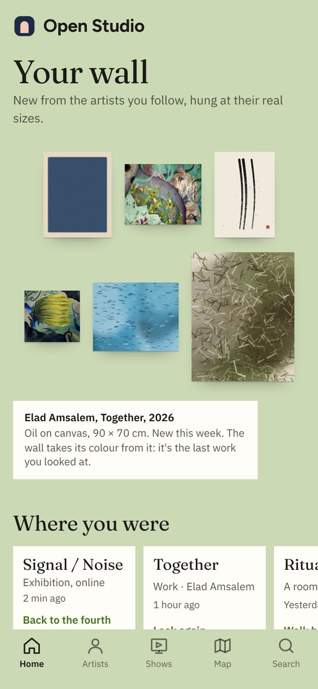
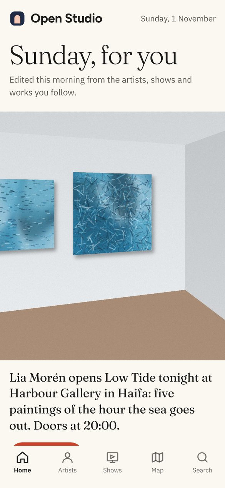
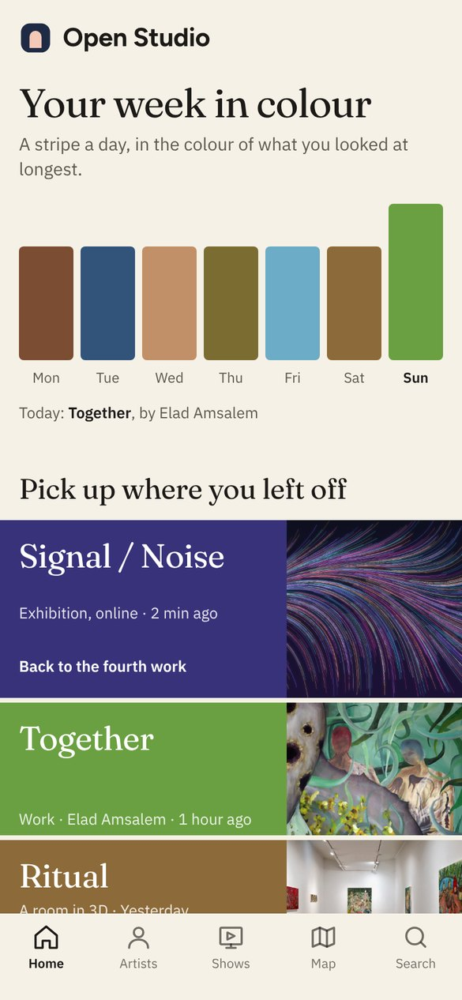
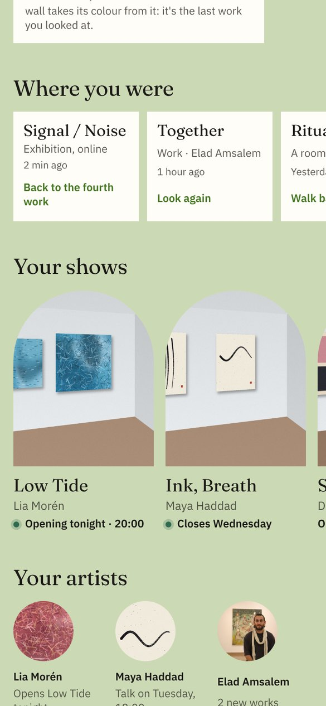
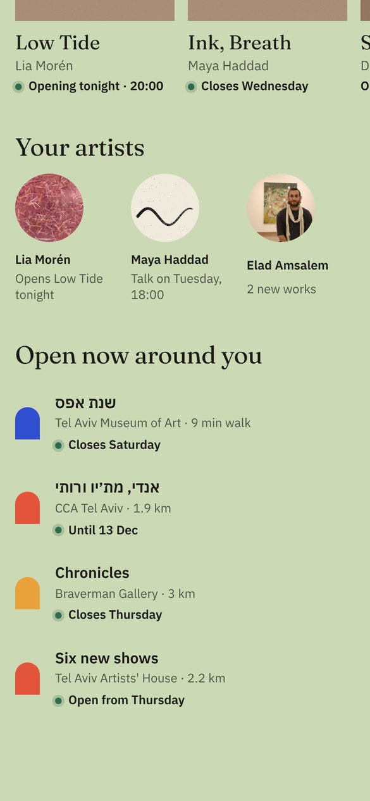
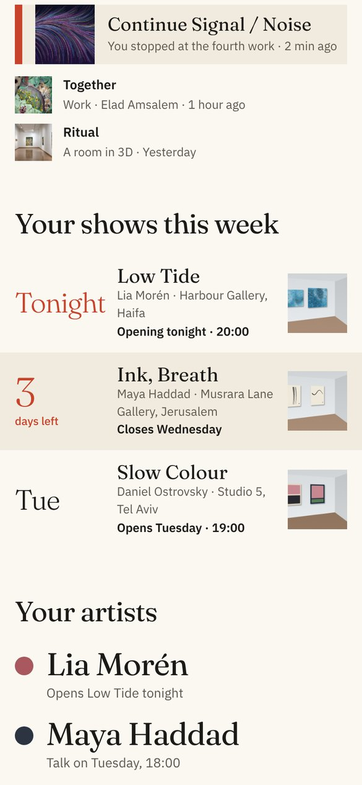
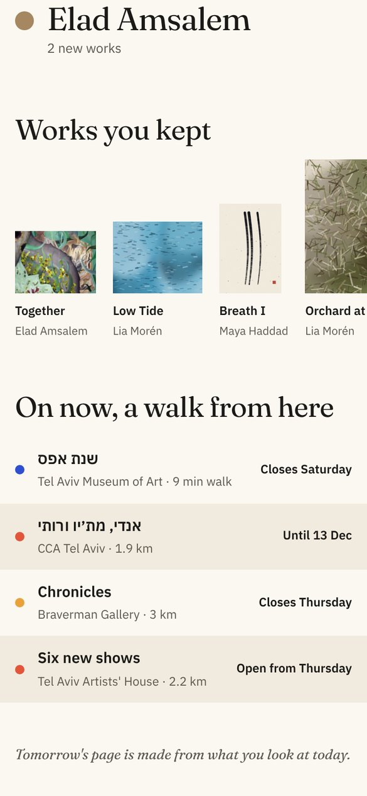
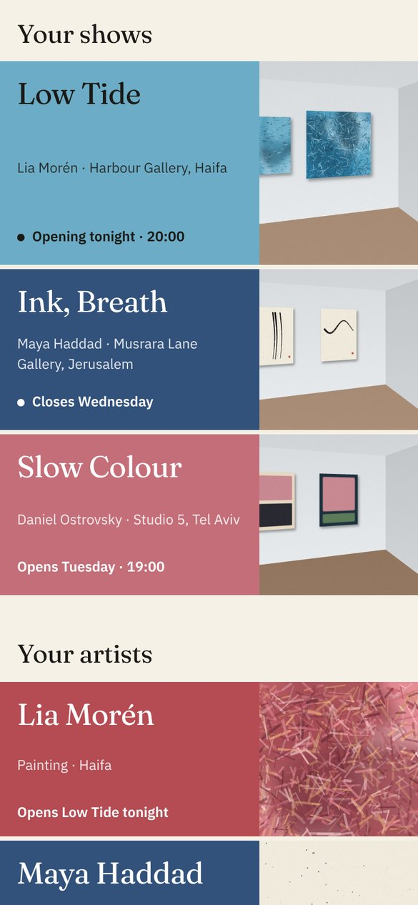
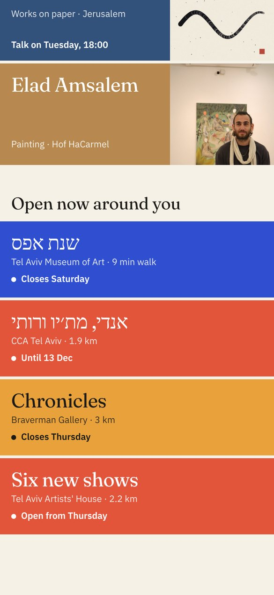

כל אחד בנוי מהתוכן האמיתי של האפליקציה, כמו שייראה ביום ראשון, 1 בנובמבר: Low Tide נפתחת הערב, Ink, Breath נסגרת ביום רביעי, והתערוכות סביבך הן תערוכות אמיתיות מהמפה של תל אביב.
יש בכל אחד
אמנים, תערוכות ויצירות שעוקבים אחריהם
מה ראיתי לאחרונה
מה רץ עכשיו סביבי
אין באף אחד
סטורי
הרשמה לאמנים
ערים
מפה

הקירThe wall

הקטלוגThe catalogue

שדה הצבעThe colour field
Open Studio · נובמבר 2026
כיוון ראשון מתוך שלושה
הקיר The wall
עמוד הבית הוא קיר בתערוכה. העבודות החדשות של האמנים שאתה עוקב אחריהם תלויות עליו יחד, בגדלים האמיתיים שלהן זו ליד זו. זה הדבר שרק Open Studio עושה.
הדבר החיצבע הקיר נלקח מהעבודה האחרונה שהסתכלת עליה, אז הוא שונה בכל ביקור.
הקיר, בצבע של העבודה האחרונה

תוויות "איפה היית" ופתחי התערוכות

האמנים שלך ומה פתוח סביבך
איך הוא עונה על מה שביקשת
"איפה היית": תוויות מוזיאון קטנות, כמו ליד עבודה, ולא ריבועים של ספוטיפיי
התערוכות שלך: פתחים בצורת קשת, כמו הלוגו, עם מה שקורה בהן עכשיו
האמנים שלך: עם מה שחדש אצלם
סביבך: קשתות בצבע של סוג המקום, עם עד מתי
מה לשקול
הכי מקורי, והכי קרוב לחזון של האפליקציה
החלק העליון נשען על עבודות. אם אין חדשות, צריך משהו אחר לתלות
Open Studio · שלושה כיוונים לעמוד הבית · 2
כיוון שני מתוך שלושה
הקטלוג The catalogue
כל בוקר יוצא גיליון שנערך רק בשבילך, כמו קטלוג של תערוכה: עבודה אחת גדולה על השער, משפט שמספר מה קורה, ומתחת אינדקס אישי.
הדבר החיהשער והמשפט שמתחתיו משתנים כל יום לפי מה שקורה אצל מי שאתה עוקב אחריו, למשל: Lia Morén opens Low Tide tonight.
השער של היום

התערוכות שלך השבוע

האמנים, העבודות ששמרת, וסביבך
איך הוא עונה על מה שביקשת
"Continue": סימנייה, ישר למקום שבו עצרת
התערוכות שלך עם מספר גדול: Tonight, 3 days left, Tue
שמות האמנים גדולים, כל אחד עם הצבע שלו
העבודות ששמרת על מדף, בגדלים יחסיים
סביבך: רשימה עם עד מתי
מה לשקול
הכי נקי ואלגנטי, והכי ברור לקריאה
פחות צבעוני משני האחרים; הצבע בא מהתמונות
Open Studio · שלושה כיוונים לעמוד הבית · 3
כיוון שלישי מתוך שלושה
שדה הצבע The colour field
כל אמן, תערוכה או עבודה הופכים לשדה צבע שטוח, בצבע שנלקח מהעבודה שלהם, עם פרוסה מהתמונה בצד. העמוד נקרא כמו ציור של שדות צבע.
הדבר החי"השבוע שלך בצבע": פס לכל יום, בצבע של מה שהסתכלת עליו הכי הרבה באותו יום. אישי לגמרי.
השבוע שלך בצבע

התערוכות שלך

האמנים שלך וסביבך
איך הוא עונה על מה שביקשת
"Pick up where you left off": שלושה שדות, הראשון גדול
התערוכות והאמנים שלך, כל אחד בצבע שלו, עם מה שקורה עכשיו
סביבך: שדות בצבע של סוג המקום, עם נקודה חיה
מה לשקול
הכי צבעוני ונועז
הכי רחוק מ"אפליקציה רגילה"; צריך לשמור שיישאר רגוע ולא רועש
Open Studio · שלושה כיוונים לעמוד הבית · 4
ההמלצה: הקיר
הוא היחיד שלא יכול להיות של אפליקציה אחרת. העבודות בגודל אמיתי, הפתחים בצורת הלוגו והקיר שמשנה צבע הם בדיוק מה ש-Open Studio מבטיחה: לראות אמנות כמו בחלל אמיתי.
ולקחת משני האחרים
משדה הצבע: את "השבוע שלך בצבע", פס יומי בצבע של מה שראית
מהקטלוג: את המספרים הגדולים, Tonight ו-3 days left, ואת הסימנייה Continue
מה קורה אחרי שתבחר
אבנה את הכיוון באפליקציה, עם הנתונים האמיתיים שלך: מה אתה עוקב אחריו ומה ראית
אבדוק אותו בטלפון, בהיר וכהה, ואראה לך צילומי מסך
אעלה אותו ל-Figma כרכיבים שאפשר לערוך
אלה סקיצות לבחירה, לא האפליקציה עצמה. התמונות והשמות מעולם הדמו של האפליקציה; התערוכות סביבך אמיתיות, מהקריאה היומית של המפה.